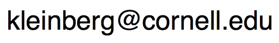

Jon Kleinberg
- Tisch University Professor
- Department of Computer Science
- Department of Information Science
- Cornell University
- Ithaca, NY 14853
I am a professor at Cornell University.
My research focuses on
the interaction of algorithms and networks, and
the roles they play in large-scale social and information systems.
My work has been supported by an
NSF Career Award,
an ONR Young Investigator Award,
a
MacArthur Foundation Fellowship,
a
Packard Foundation Fellowship,
a
Simons Investigator Award,
a
Sloan Foundation Fellowship,
a
Vannevar Bush Faculty Fellowship,
and grants from Facebook, Google, Yahoo, the MacArthur Foundation,
the ARO, and the NSF.
I am a member of
the
National Academy of Sciences,
the
National Academy of Engineering,
and the
American Academy of Arts and Sciences.
Link to: Contact information.
-
In Spring 2021, Karen Levy
and I are teaching a new course,
Choices and Consequences in Computing (INFO 1260 / CS 1340).
The course is designed at an introductory level with no formal prerequisites,
and will cover a range of ethical, societal, and policy implications
of computing and information.
-
D. Easley, J. Kleinberg.
Networks, Crowds, and Markets: Reasoning About a Highly Connected World.
Cambridge University Press, 2010.
-
This book is based on an inter-disciplinary course that we teach entitled
Networks.
The book, like the
course, is designed at the introductory undergraduate
level with no formal prerequisites. To support deeper
explorations, most of the chapters are supplemented with
optional advanced sections.
-
J. Kleinberg, E. Tardos.
Algorithm Design.
Addison Wesley, 2005.
-
This book is based on the undergraduate algorithms course that we both teach.
We also use the more advanced parts for our graduate algorithms course.
-
An on-line course on edX entitled
Networks, Crowds, and Markets,
with David Easley and Eva Tardos.
-
Recent courses at Cornell:
Advising
- Current and former Ph.D. students:
Manish Raghavan,
Anna Evtushenko,
Katherine Van Koevering,
Kate Donahue,
Katy Blumer,
Michela Meister,
Cazamere Comrie,
Marios Papachristou,
Maithra Raghu (Google),
Rediet Abebe (Berkeley; Harvard Society of Fellows),
Rahmtin Rotabi (Google),
Isabel Kloumann (Facebook),
Johan Ugander (Stanford),
Sigal Oren (Ben-Gurion Univ),
Daniel Romero (U. Michigan),
Lars Backstrom (Facebook),
Alex Slivkins (Microsoft Research),
Mark Sandler (Google),
Elliot Anshelevich (RPI),
David Kempe (USC),
Amit Kumar (IIT Dehli),
Debra Goldberg (CU Boulder).
- Current and former postdocs:
Jonas Juul,
Nate Veldt,
Hoda Heidari (CMU),
Austin Benson (Cornell),
Flavio Chierichetti (Sapienza University of Rome),
Jure Leskovec (Stanford),
Sid Suri (Microsoft Research),
Gregory Kossinets. (Google),
Mohammad Mahdian (Google),
Frank McSherry (Microsoft Research)
Anupam Gupta (CMU).
Recent Papers
Jon Kleinberg
Computing and Information Science
Gates Hall
Cornell University
Ithaca, NY 14853
(607)255-9197
